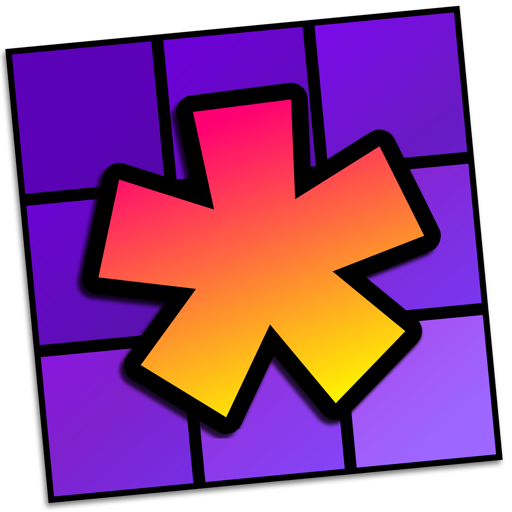

Explore mobile notes → · Try circle puzzles →

Throwaway exploration · November 9
Try the rule. See what earns a place.
Can these extra rules feel clear on a phone? These are short, nearly completed teaching boards, not generated puzzles or calibrated difficulty levels. Nothing is saved.